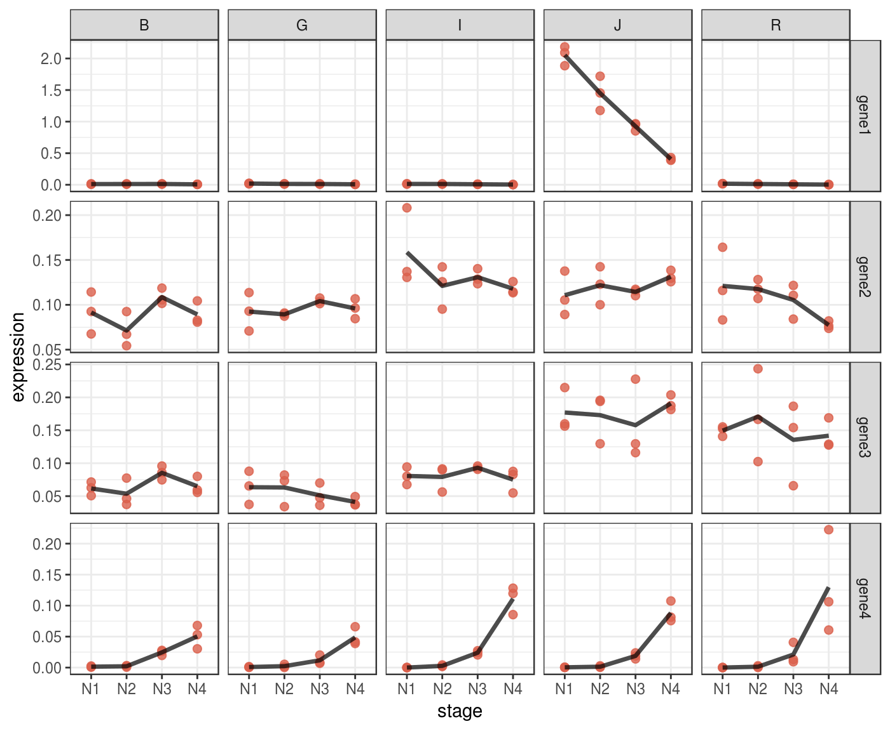
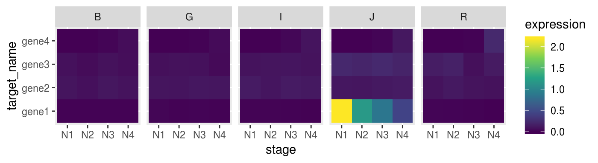
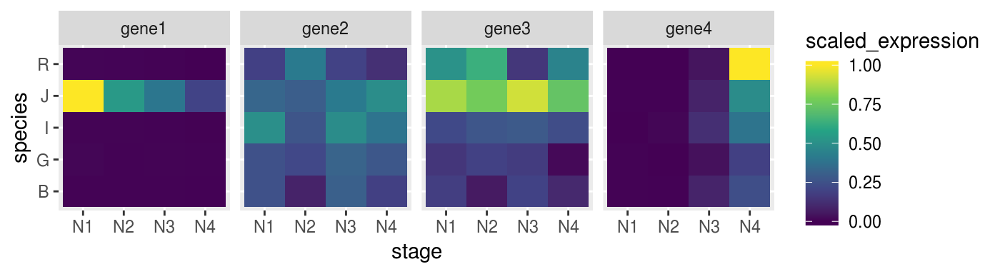
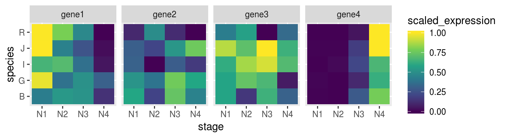
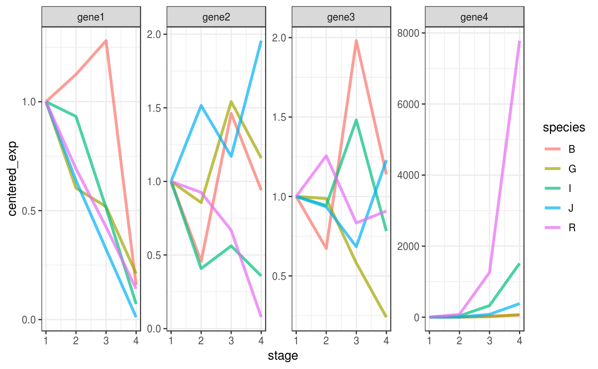

Scale and Visualize qPCR results
Otho Mantegazza
2018-11-30
scale-plot.RmdHere, you will learn how to scale, inspect and visualize the gene expression data that you have parsed in the previous vignette (Load and Normalize the qPCR Output).
Setup
library(fluidgr)
library(magrittr)
library(dplyr)
library(stringr)
library(ggplot2)
library(forcats)
library(scales)
library(devtools)Data
We provide the object fluidigm_expr, that stores normalized gene expression measurement.
This object is exaclty the same at the one produced in the vignette (Load and Normalize the qPCR Output).
You can load it with:
fluidigm_expr
#> # A tibble: 240 x 7
#> sample_name sample_type target_name target_type ct_value norm_geom_mean
#> <chr> <chr> <chr> <chr> <dbl> <dbl>
#> 1 J-N2R3 Unknown gene1 Test 5.79 6.57
#> 2 J-N2R3 Unknown gene4 Test 15.0 6.57
#> 3 J-N2R3 Unknown gene2 Test 9.60 6.57
#> 4 J-N2R3 Unknown gene3 Test 9.52 6.57
#> 5 J-N2R2 Unknown gene1 Test 5.92 6.46
#> 6 J-N2R2 Unknown gene4 Test 16.8 6.46
#> 7 J-N2R2 Unknown gene2 Test 9.27 6.46
#> 8 J-N2R2 Unknown gene3 Test 8.83 6.46
#> 9 J-N2R1 Unknown gene1 Test 5.53 5.76
#> 10 J-N2R1 Unknown gene4 Test 16.4 5.76
#> # ... with 230 more rows, and 1 more variable: expression <dbl>Scale
Scaling is not necessary, and you can communicate and visualize directly the normalized expression values; stored in the expression column of the fluidigm_expr dataset.
Indeed scaling is not necessary, but, together with exploratory plots, scaling can help you detect patterns in your data. You can understand better the outcome of scaling when you visualize tour data in plots. This is why you can learn about the effects of scaling also in the next section “Visualize”.
Scale with the scale_fluidigm() function
Fluidgr provides the scale_fluidigm() function, that scales expression values by z-score according to the groups provided in the argument .group.
This function takes the dataset output of normalize() and returns the same dataset with the extra column scaled_expression.
scaled_dat <-
fluidigm_expr %>%
scale_fluidigm(.group = target_name)Write your own scaling function
You can write your own scaling function, becaus scale_fluidigm() function is just a soft wrapper around dplyr’s group_by() and mutate(). If you want to try different scaling methods, you can replicate and tweak the output of scale_fluidigm() with:
This should provide to you a good basis and enough freedom to explore and visualize your data as you prefer.
Visualize
Fluidigmr does not provide plotting function, because all the functions that you need to plot this kind of data are already available in ggplot2. Indeed the dataset output of is already in a tidy/gathered format.
Here we provide some ideas of how you can explore, plot and visualize your Fluidigm data.
What variables are in your data?
Make the variables in your data explicit.
Effective visualization depends from the variable that determine the effect in your dataset and eventually by the question that you are trying to anwser.
For example in the sample dataset we are measuring the expression of four genes in 4 developmental stages in 5 species. The column target_name records the “gene” variable, while the other two variables, developmental stage and species, are hidden in the sample_name variable. We can make them explicit.
The sample_name variable is encoded as “J-N1R1”:
- The first letter “J” is the species.
- The letter and the number after the hyphen “N1” encode for the stage.
- The last letter and number “R1” encode for the replicate.
fluidigm_expr <-
fluidigm_expr %>%
# make species explicit
mutate(species = str_split_fixed(string = sample_name,
pattern = "-",
n = 2)[, 1]) %>%
# make stage explicit
mutate(stage = str_sub(string = sample_name,
start = 3,
end = 4)) %>%
# make replicate explicit
mutate(replicate = str_sub(string = sample_name,
start = 5,
end = 6))Lineplot
A lineplot can be informative directly on normalized data, without scaling.
You can use facets to display multivariate data.
p <- fluidigm_expr %>%
ggplot(aes(x = stage,
y = expression)) +
# plot each expression value into a point
geom_point(size = 2,
col = "#DA614D",
alpha = .8) +
# it might be complicated to add a line that connect means
# across stages,
# because stages are encoded as a categorical variable,
# we must turn them into numeric
stat_summary(aes(x = stage %>%
as.factor(.) %>%
as.numeric(.)),
fun.y = mean,
geom="line",
size = 1.2,
alpha = .7,
linejoin = "round") +
# implement facetting with independent y values
# for each genes, since expression values are
# not comparable across genes
facet_grid(target_name ~ species,
scales = "free_y") +
theme_bw()
p %>% print()
Some patterns in your data might be more evident if you plot them in log scale.
p_log <-
p + scale_y_log10()
p_log %>% print()
Also using heatmap with ggplot2
p_heat <-
fluidigm_expr %>%
ggplot(aes(x = stage,
y = target_name,
fill = expression)) +
geom_tile() +
facet_grid(. ~ species) +
scale_fill_viridis_c()
p_heat %>% print()
Sometime heatmap don’t convey muich invormation if you don’t scale your data.
For example we can scale every gene on z-score to make them comparable.
scaled_gene <-
fluidigm_expr %>%
group_by(target_name) %>%
mutate(scaled_expression = expression %>%
rescale(from = range(.), to = c(0,1)))Check if the heatmap has improved
remeber to map the colours to the new scaled_expression values
p_heat <-
scaled_gene %>%
ggplot(aes(x = stage,
y = species,
fill = scaled_expression)) +
geom_tile() +
facet_grid(. ~ target_name) +
scale_fill_viridis_c()
p_heat %>% print()
We can try to set more groups.
scaled_dat <-
fluidigm_expr %>%
group_by(target_name, species) %>%
mutate(scaled_expression = expression %>%
rescale(from = range(.), to = c(0,1)))Check if the heatmap has improved
remeber to map the colours to the new scaled_expression values
p_heat <-
scaled_dat %>%
ggplot(aes(x = stage,
y = species,
fill = scaled_expression)) +
geom_tile() +
facet_grid(. ~ target_name) +
scale_fill_viridis_c()
p_heat %>% print()
Scale and center on a specific group - Timecourses
Sometime it might be useful to center the expression data on a specific timepoint or condition, in a manner similar to the \(2^{ - \Delta \Delta Ct}\) method
This can be achieved with the function center_stage():
center_stage <- function(scaled_data, group_var, group_var2, center_var)
{
stopifnot("scaled_expression" %in% colnames(scaled_data))
group_var <- enquo(group_var)
group_var2 <- enquo(group_var2)
scaled_data %>%
group_by(!!group_var, !!group_var2) %>%
mutate(center_mean = case_when(stage == center_var ~ scaled_expression) %>%
mean(na.rm = T),
centered_exp = scaled_expression/center_mean)
}
centered_dat <-
scaled_dat %>%
center_stage(group_var = species,
group_var2 = target_name,
center_var = "N1")
centered_dat %>%
ggplot(aes(x = stage,
y = centered_exp,
group = species,
colour = species)) +
# plot each expression value into a point
# geom_point(size = 2,
# col = "#DA614D",
# alpha = .8) +
# it might be complicated to add a line that connect means
# across stages,
# because stages are encoded as a categorical variable,
# we must turn them into numeric
stat_summary(aes(x = stage %>%
as.factor(.) %>%
as.numeric(.)),
fun.y = mean,
geom="line",
size = 1.2,
alpha = .7,
linejoin = "round") +
# implement facetting with independent y values
# for each genes, since expression values are
# not comparable across genes
facet_wrap(facet = "target_name",
scales = "free",
nrow = 1) +
theme_bw() 